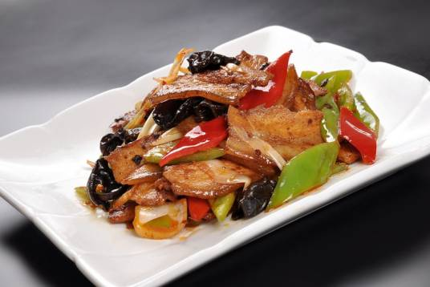

四川回锅肉
回锅肉起源四川农村地区。古代时期称作油爆锅，四川地区大部分家庭都会制作。所谓回锅，就是再次烹调的意思。回锅肉在川菜中的地位是非常重要的，回锅肉一直被认为是川菜之首，川菜之化身，提到川菜必然想到回锅肉。
回锅肉，是四川传统菜式中家常菜肴的代表菜之一，属于川菜。其制作原料主要有猪后臀肉（二刀肉）、青椒、蒜苗等，所谓“回锅”，是指食材先煮后炒，两次入锅，二次烹调之意，将“回锅肉”翻译成英语，亦指“煮了第二遍的菜”。
回锅肉口味独特，色泽红亮，肥而不腻，色香味俱全，是下饭菜中大部分人会选的菜。川菜中的回锅肉，最佳是蒜苗、仔姜、青椒做“翘头”，佐以郫县豆瓣、永川豆豉。而自贡家常菜中的回锅肉，就有青椒、仔姜、葱白配，藠头配，干豇豆配，莲花白配，甚至锅盔配。
配料各有不同，除了蒜苗（青蒜）还可以用彩椒、洋葱、韭菜、锅盔等来制作回锅肉，“家常”顾名思义，“调料家家常有”之意，故每一家制作出的味道都不相同，这一特性，也是赋予了回锅肉这道菜独特的魅力。
2018年9月10日，“中国菜”正式发布，“四川回锅肉”被评为“中国菜”四川十大经典名菜。
丽江黑山羊
丽江平均海拔2000米以上，多山。湿润的气候培育了丰富的草场，借着夏季浓浓的雨水和充足的光照，在陡峭的高山上，养育出青绿色的山草。丽江山势陡峭，黑山羊作为纳西族自古选育传递的优良品种，很适应这里的地势。丽江天然无污染的环境以及抗高原环境、抗紫外线、抗寒冬的需要，黑山羊具有高蛋白、高营养、好口感的优越特点，深得纳西先民的喜爱。丽江许多民族都热烈庆祝的“火把节”是一场盛大的沸腾的狂欢，其中最美滋滋的可谓一餐酣畅淋漓的黑山羊肉。可是这之前，是忌吃羊肉的，体现其对羊肉特殊的情结。
菜品源流
传说回锅肉起源于清代末期，由一位姓凌的翰林偶然发明。然而，真相并非如此，回锅肉的源头可以追溯到北宋，具体于何时诞生、由何人炮制、自何时流行已无法考证。
古时称为“油爆肉”，味道偏向于咸鲜，到了明清时期，辣椒的传入，致使回锅肉基本定型。
清末豆瓣的创制，大大提升了回锅肉的口感和品质，使回锅肉成为川菜中最著名的一道菜。
如果说还不能断定宋朝爆肉与回锅肉是否相同；那么，明代的油爆猪则清晰地呈现出回锅肉的基本特征。
传说典故
明人宋翊《竹屿房杂部》这样记载：“油爆猪，取熟肉细切脍（切片），投热油中爆香，以少酱油、酒浇，加花椒、葱，宜和生竹笋丝、茭白丝同爆之。”
营养功效
1、味甘咸、性平，入脾、胃、肾经。 2、具有补肾养血，滋阴润燥之功效。 3、主治热病伤津、消渴羸瘦、肾虚体弱、产后血虚、燥咳、便秘、补虚、滋阴、润燥、滋肝阴，润肌肤，利二便和止消渴。 4、猪肉煮汤饮下可急补由于津液不足引起的烦躁、干咳、便秘和难产。 5、回锅肉中所用的猪肉油脂含量高，甜面酱及豆瓣酱均含钠，故高血压患者不宜多吃。